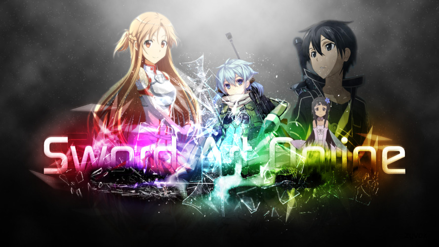

Sword art online.
Это аниме, основанное на серии лайт-новел Реки Кавахара. Действия происходят в альтернативном 2022 году, когда виртуальный мир стал настолько качественным и проработанным, что отличить его от реального стало почти невозможно. Попасть в параллельную реальность можно с помощью специального шлема NerveGear, который симулирует все человеческие чувства и переносит их в виртуальный мир. В общем, NerveGear — это такой хорошо прокаченный Oculus Rift.
Первая игра, завязанная на технологии шлема, — это как раз «Мастер меча онлайн». В день, когда она становится доступной для всех желающих, больше 10 тысяч игроков входят на сервер и — сюрпрайз! — обнаруживают, что из меню пропала кнопка выхода. Единственный способ вернуться в реальный мир, как объясняет создатель игры, это дойти до 100 этажа (уровня) и победить босса. Плюс, маленькая деталь, чтобы сделать ситуацию ещё приятнее: умирая в игре, умираешь в жизни.
